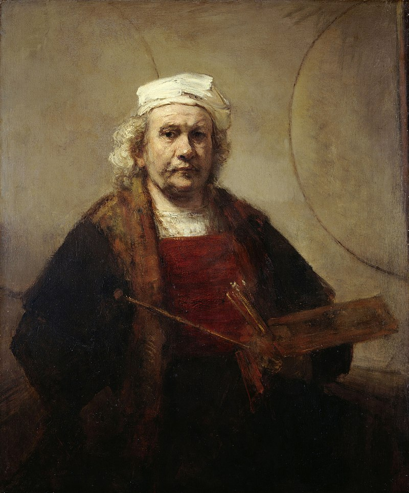

Формирование исторического стиля барокко отчасти является следствием кризиса идеалов Итальянского Возрождения в середине XVI в. и стремительно меняющейся картины мира на рубеже XVI—XVII вв.
Поразительно, но самая великая эпоха в истории искусства была коротка — всего каких-нибудь десять-пятнадцать лет. В 1514 году умер Браманте.
В 1519 году уже не было в живых Леонардо да Винчи, в 1520 году скончался Рафаэль. И только Микеланжело продолжал работать до 1564 года.
Тем не менее это была уже другая эпоха.
Предыдущее столетие в Италии было в художественном отношении настолько сильным, что его идеи, несмотря на все трагические коллизии,
не могли исчезнуть внезапно, они продолжали оказывать значительное влияние на умы людей. А шедевры искусства Высокого Возрождения — произведения Леонардо, Микеланжело, Рафаэля — казались недосягаемыми.
В этом суть трагических противоречий эпохи барокко. Это было время болезненных изменений мировоззрения,
неожиданных поворотов человеческой мысли, отчасти вызванное великими географическими и естественно-научными открытиями.
Стиль барокко в живописи характеризуется динамизмом композиций, «плоскостью» и пышностью форм, аристократичностью и незаурядностью сюжетов,
напряжённостью, контрастностью красок, аффектацией, экспрессивностью, обострённой чувственностью, стремлением к величию создаваемых образов, к совмещению реальности и иллюзии.
Самые характерные черты барокко — броская цветистость и динамичность.
Мировоззренческие основы стиля барокко сложились в результате потрясений, какими стали для XVI века Реформация и учение Коперника.
Изменились утвердившееся в античности представление о мире как о разумном и постоянном единстве, а также ренессансное представление о человеке как о центре мира.

Андреа дель Поццо (1642 - 1709)
Плафон церкви Сант-Иньяцио. 1691 — 1694.
Художники
Ярким примером стиля барокко стало творчество Микеланджело Меризи да Караваджо.
Микеланджело Меризи (1571—1610) считают самым значительным мастером среди итальянских художников, создавших в конце XVI в. новый стиль в живописи.
Его картины, написанные на религиозные сюжеты, напоминают реалистичные сцены современной автору жизни, создавая контраст времён поздней античности и Нового времени.
Герои изображены в полумраке, из которого лучи света выхватывают выразительные жесты персонажей, контрастно выписывая их характерность.
Художник свои сложные композиции сразу реализовывал на холсте, не используя эскизы и наброски. Искусство Караваджо оказало огромное влияние на творчество не только итальянских,
но и ведущих западноевропейских мастеров XVII века.

Портрет Караваджо работы Оттавио Леони. 1621
Крупнейшим представителем золотого века голландской живописи являлся Рембрандт Харменс ван Рейн (1606 — 1669).
Он сумел воплотить в своих произведениях весь спектр человеческих переживаний с такой эмоциональной насыщенностью,
которой до него не знало изобразительное искусство. Работы Рембрандта, чрезвычайно разнообразные по жанровой принадлежности,
открывают зрителю вневременной духовный мир человеческих переживаний и чувств. Человечеству понадобилось два столетия,
чтобы в полной мере оценить значение творчества Рембрандта. Cмелость Рембрандта-живописца и меткость его наблюдений в качестве
рисовальщика впервые получили признание в XIX веке, когда художники реалистической школы Курбе противопоставили его глубоко
прочувствованную поэзию света и тени беспрекословной чёткости и ясности французского академизма.

Автопортрет. 1665, Кенвуд-хаус, Лондон.
Крупнейшим представителем мадридской школы времён золотого века испанской живописи был Диего Родригес де Сильва-и-Веласкес (1599 - 1660).
Он изображал ремесленников, поваров, мастеров в процессе работы. Жанр, использованный Веласкесом, назывался «бодегонес» (в переводе с испанского «трактир», «дешёвая столовая»).
Считается одним из главных представителей испанской живописи и одним из мастеров универсальной живописи.
В этих работах ощущается внимательное изучение молодым Веласкесом караваджистского искусства, многие образцы из которого были доступны в Севилье,
и долгое пребывание в мастерской Пачеко: работа с натуры, тщательность рисунка, точность сходства с моделью. В мадридский период мастерство художника совершенствуется.
Он обращается к редким для испанской живописи античным сюжетам, стремясь трактовать их по-своему. К этому же времени относится большая часть дошедших до наших дней
парадных портретов короля и членов королевской семьи и несколько картин на религиозные темы.
Несмотря на отсутствие в них жестов и движений, они необычайно реалистичны и естественны.

Диего Веласкес. Автопортрет. 1645.
Андреа дель Поццо (1642 - 1709) - итальянский живописец и архитектор, представитель барокко, виртуозный мастер иллюзионистической росписи.
Первой большой работой стала роспись потолка церкви Сан-Франческо-Ксавье в Мондови. Здесь Поццо продемонстрировал, что вполне овладел приёмами иллюзионизма.
Шедевром Поццо считаются фрески апсиды, потолка и роспись подкупольного пространства римской церкви Сан-Иньяцио (1685—1699).
У церкви, освящённой ещё в 1642 году, из-за недостатка средств так и не был возведён купол.
Поццо на холсте диаметром 17 метров создал мастерскую иллюзию, так что зритель, находясь в церкви, видит свод несуществующего купола
с изображением Апофеоза Святого Игнасио. Фрески прославляют миссионерскую деятельность ордена иезуитов во всех частях света.
Поццо трактует тему в несколько воинственном ключе, — вместо традиционных евангелистов и отцов церкви художник изобразил
героев Ветхого Завета.

Андреа Поццо, автопортрет. 1687.
Микеланджело Меризи да Караваджо.
.jpg)
Призвание апостола Матфея. 1600.
.jpg)
Обращение Савла. 1601.
Ян Вермеер

Девушка с жемчужной серёжкой. 1665.
Аллегория Живописи. 1666/1668.
Рембрандт Харменс ван Рейн

Христос во время шторма
на море Галилейском. 1633.
на море Галилейском. 1633.
Возвращение блудного сына. 1666/1669.
Ночной дозор. 1642.
Диего Родригес де Сильва-и-Веласкес
Пряхи. 1658.

Менины. 1656.
Искусство барокко было призвано выражать эмоции
и страсть,
а не мечтательную созерцательность, которая ценилась в эпоху
Высокого Возрождения. В отличие от спокойных лиц картин ренессансной эпохи, образы барокко носили черты подчёркнутой индивидуальности
и экспрессивности. Живописцы для большего выражения эмоций использовали соответствующие композиционные приёмы:
угловую перспективу, асимметрию, диагональные движения, контрасты света и тени, создавая ощущение нестабильности, подвижности форм и пространства. Они усиливали общую динамику композиции изображением бурных движений, драпировок, будто раздуваемых невидимым ветром. Другим важным признаком живописи барокко была аллегоричность. Предполагалось, что образованный зритель должен был знать и читать аллегорические сюжеты, и понимать изобразительные метафоры.
Художники барокко открыли искусству новые приемы пространственной интерпретации формы в её вечно изменчивой жизненной динамике, активизировали жизненную позицию. Единство жизни в чувственно-телесной радости бытия, в трагических конфликтах составляет основу прекрасного в искусстве барокко.
а не мечтательную созерцательность, которая ценилась в эпоху
Высокого Возрождения. В отличие от спокойных лиц картин ренессансной эпохи, образы барокко носили черты подчёркнутой индивидуальности
и экспрессивности. Живописцы для большего выражения эмоций использовали соответствующие композиционные приёмы:
угловую перспективу, асимметрию, диагональные движения, контрасты света и тени, создавая ощущение нестабильности, подвижности форм и пространства. Они усиливали общую динамику композиции изображением бурных движений, драпировок, будто раздуваемых невидимым ветром. Другим важным признаком живописи барокко была аллегоричность. Предполагалось, что образованный зритель должен был знать и читать аллегорические сюжеты, и понимать изобразительные метафоры.
Художники барокко открыли искусству новые приемы пространственной интерпретации формы в её вечно изменчивой жизненной динамике, активизировали жизненную позицию. Единство жизни в чувственно-телесной радости бытия, в трагических конфликтах составляет основу прекрасного в искусстве барокко.